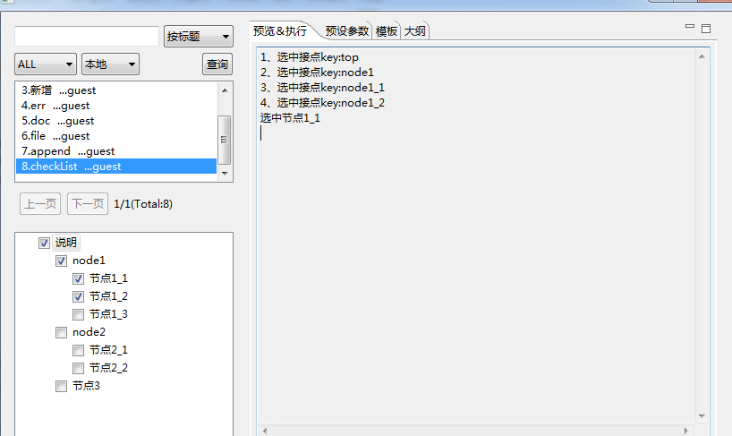

内置参数
内置参数只有一个,见下
1、checkedList: 选中的复选框的key值，每个复选框都有一个值，该列表存放所选中的值，checkedList是比较重要的一个参数，通过这个值可以灵活的控制生成的内容。 例:
<ftl_head> { 'node_name':'说明', 'node1': { 'node1_1':'节点1_1', 'node1_2':'节点1_2', 'node1_3':'节点1_3' }, 'node2': { 'node2_1':'节点2_1', 'node2_2':'节点2_2' }, 'node3':'节点3' } </ftl_head> <#list checkedList as e> ${e_index+1}、选中接点key:${e} </#list> <#if checkedList?seq_contains("node1_1")> 选中节点1_1 </#if>
选中了四个复选框截图
